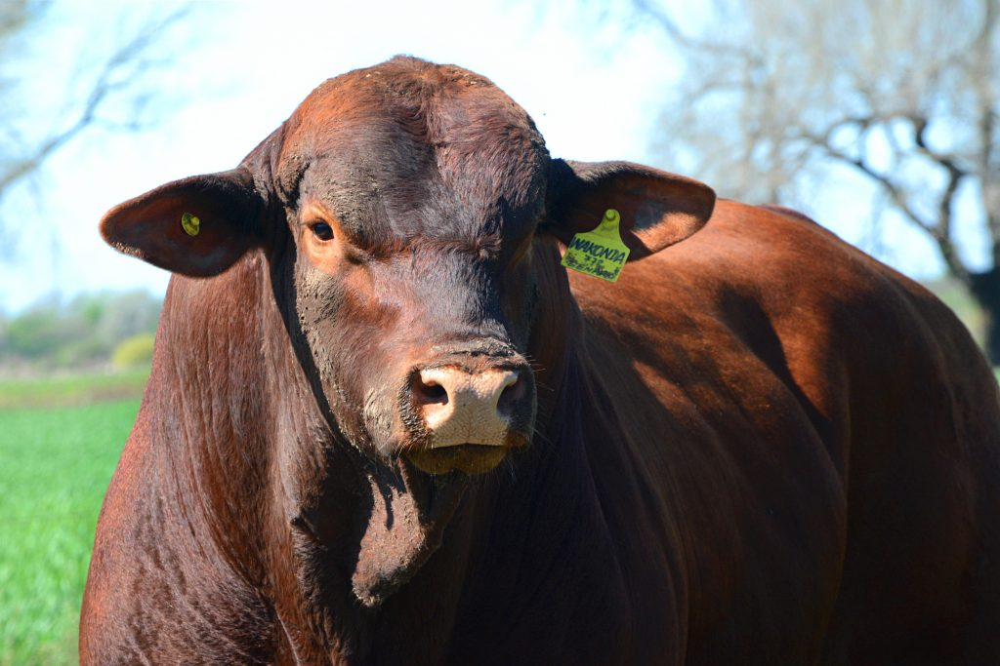

Rienda

¿Qué es Rienda?
Rienda es una app de gestión de campo, centrada principalmente en ganadería pero que también incluye un módulo de agricultura.
¿Qué incluye nuestra app?
- Panel Web
- Bot de WhatsApp
- Registro de Caravanas
- Registro de animales por tropa
- Registro de Lluvias
- Mapa Satelital
- ¡Y mucho más!
¿Cómo funciona el panel web con el bot?
Estás en el campo... no tenés señal y necesitás cargar datos sin olvidarte de nada... Entrás a WhatsApp, buscás el número de teléfono de nuestra app y empezás a enviarle mensajes como si fuese una persona normal... de texto o de audio, también soporta imágenes. Cuando tomás señal esos mensajes se envían todos juntos al bot, el bot los interpreta y registra todo en el panel web de forma automática. Así de simple, tenés toda tu info cargada.
¿Como funciona el panel web con el bot?
Estas en el campo... no tenes señal y necesitas cargar datos sin olvidarte de nada... Entras a Whatsapp, buscas el numero de telefono de nuestra app y empezas a enviarle mensajes como si fuese una persona normal... de texto o de audio, tambien soporta imagenes. Cuando tomas señal esos mensajes se envian todos juntos al bot, el bot los interpreta y registra todo en el panel web de forma automatica! Asi de simple tenes toda tu info cargada.
| Àrea | Mòdulo/Funciòn | Aplicaciòn en el Campo |
|---|---|---|
| Ganaderia | Control de Ganado | Identificacion Individual o por Lote |
| Seguimiento Sanitario | Planes de Vacunacion y tratamientos aplicados | |
| Mapa Satelital | Ubicacion de forraje, granos e insumos | |
| Stock en Campo | Disponibilidad de forraje, granos e insumos | |
| Inventario de los Empleados | Herrameintas, aperos e indumentaria asignada | |
| Movimientos Ganaderos | Pesajes, cambios de cuadro y traslados | |
| General | Maquinaria | Mantenimiento, horas de uso y combustible |
| Pluviometro | Registro y estadisticas de milimetros caidos | |
| Alertas | Notificaciones preventivas y fechas limite | |
| Tareas asignadas a cada empleado | Distribucion de labores diarias y avannce | |
| Sistema de caja Chica | Control de gastos diarios y comprobantes | |
| Y mucho mas para optimizar la gestion de tu campo! | ||